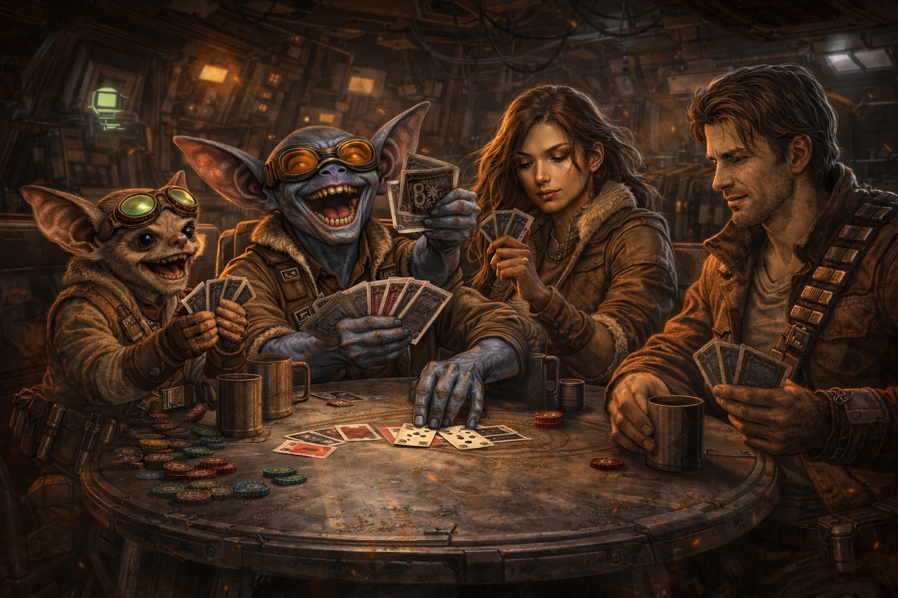
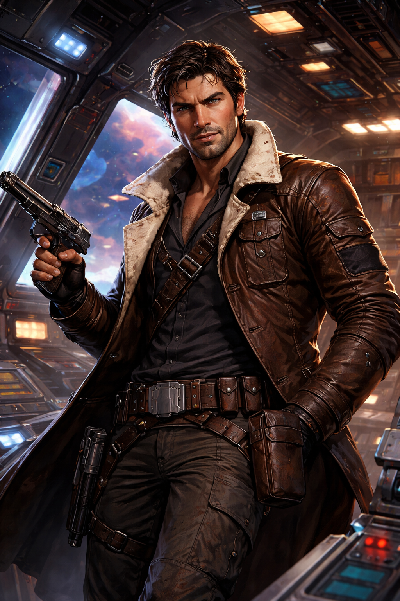
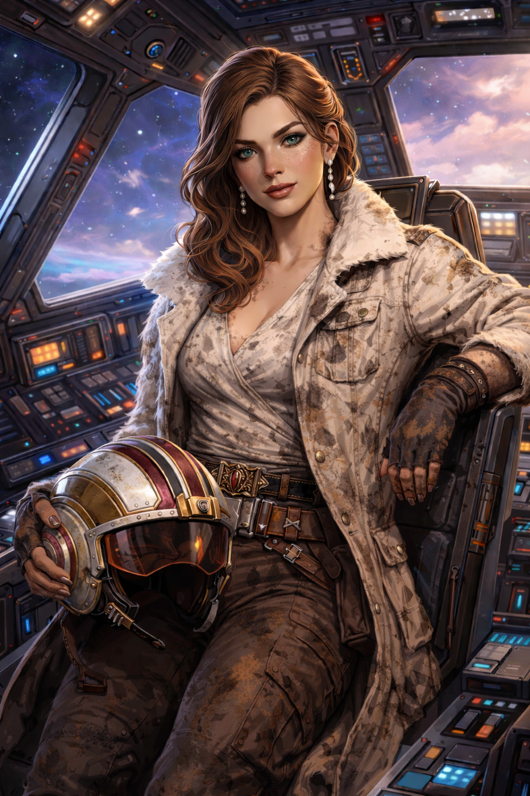
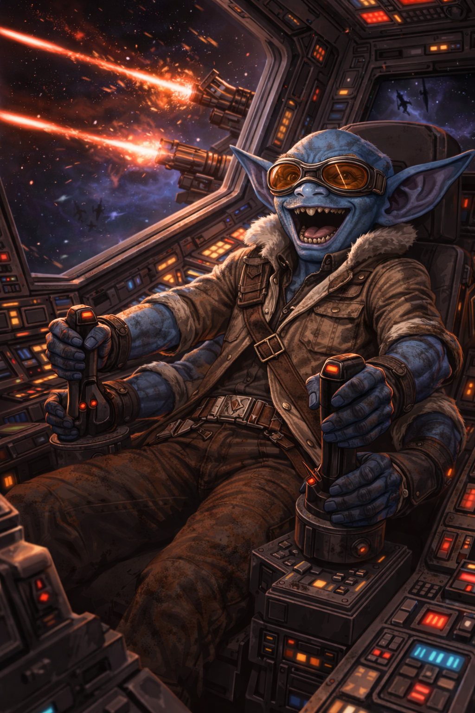
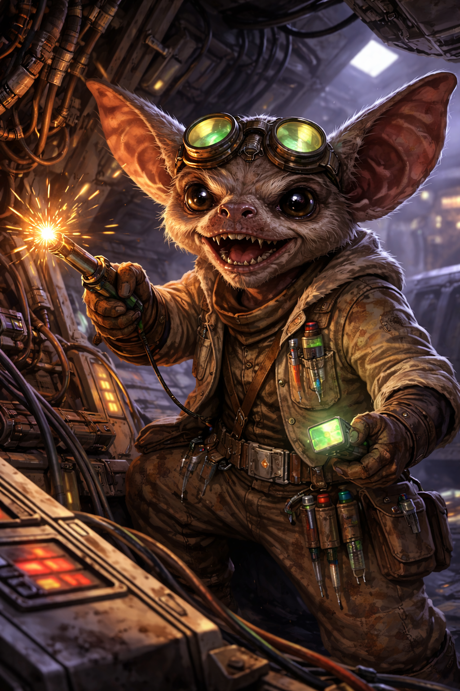
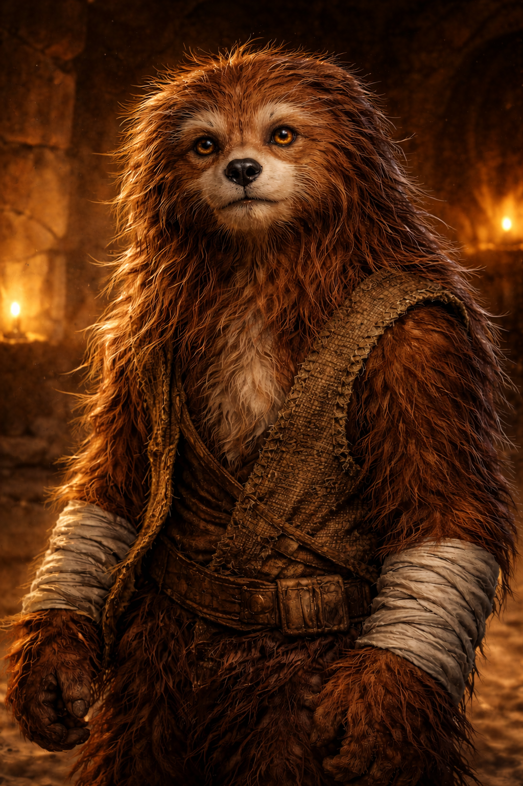
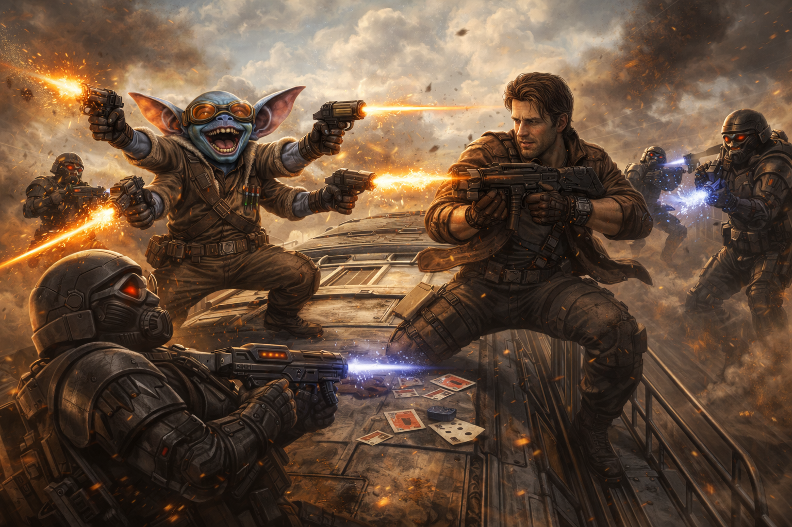

The crew used to run jobs for Torel Vorne, a ruthless crimelord in the Outer Rim. One job went catastrophically wrong and cost Vorne a fortune. Vorne doesn't forgive debts — he sold the crew out to the Empire.
On the run and hunted, the crew crossed paths with Henry — an adolescent Wookiee being transported to the spice mines of Kessel as a slave. Gune rescued him. Henry has been part of the crew ever since.
Eventually, the crew fell in with General Kraken's rebel cell — not out of ideology, but out of necessity. Kraken gave them purpose. Or at least, a better class of trouble.
General Kraken — Bora's former commanding officer during the Clone Wars — called in a personal favor. His cell has learned that Graff Raster — a former Jedi, removed from the Order before the Clone Wars — is alive and hiding on Tatooine. Because he wasn't officially a Jedi when Order 66 came down, the Empire's purge passed him by. Until now. Kraken chose Bora for this mission for a reason: Graff Raster is Bora and Indie's estranged uncle.
The Empire knows too. Captain Parlan of the Star Destroyer Relentless has hired a bounty hunter in Mandalorian armor — deadly, ruthless, and already one step ahead — to find Raster and bring him in.
The crew must find Graff Raster first and get him off-world before the Empire closes the trap.
The crew answered a distress call from Dana, one of Kraken's operatives aboard Kwenn Space Station — an Imperial-run facility. Since Imperials controlled the station, Bora and Indie were sent in first. Humans draw less suspicion.
They arrived too late — Dana was dead, killed by bounty hunters using Sennari poison darts. A firefight erupted with Lt. Voor and a squad of hunters. In the chaos, a figure in Mandalorian armor appeared briefly — commanding, lethal — before vanishing. Bora and Indie were overwhelmed and defeated.
Enter the rescue.
Eck and Gune — both short aliens — stole an Imperial officer's uniform and wore it together, one on top of the other, passing themselves off as a single very oddly-proportioned Imperial. It worked. Kwenn Station is Imperial-run and nobody questions the uniform. They moved freely through the station, located Bora and Indie, and pulled off the rescue.
The crew recovered Dana's data storage pad. The message was clear: Graff Raster is alive. He's on Tatooine.
The escape was not subtle. During the getaway, Gune blew up a train that operated on the station — the second train Gune has destroyed in his career. The Empire has since used these attacks in their propaganda, broadcasting the destruction to foment hatred of the Rebellion among the civilian population.
The crew escaped aboard the Centennial Duck just before an Imperial quarantine locked down the station. The Star Destroyer Relentless was docked at Kwenn for repairs — roughly five days behind them.
The Duck touched down at Docking Bay 94. A bribed customs officer looked the other way.
Mos Eisley was already crawling with bounty hunters. The crew explored the cantina, the general store, and the streets around Jabba's Townhouse. They met Labria — a drunken humanoid info broker, eager to talk for the price of a drink.
They learned that Tatooine's oldsters — passengers from the original colony ship — were being murdered. A man named Heff was the latest victim.
At Tar Lup's store, Akkik & Gorrt (Jabba's goons) were shaking down the owner. Jawa traders passed through. And a labor droid called Four-el mistook a local farmer named Bels Lank for Graff Raster. The assassin droid IG-72 killed Four-el on the spot and headed for Lank's farm.
Meanwhile, Puggles Trodd — a rodent-like bounty hunter with a love of explosives — had set up a hunter registration booth. The competition was getting organized.
Labria led the crew to the Tower Ridge Water Silo to meet Slag Flats, an Ithorian info broker who supposedly knew where Raster was hiding.
They arrived to find Slag already dead. The Mandalorian had gotten there first.
Then the trap sprang. A man with a knife for a hand sealed the magnetic doors, locking the crew inside the silo. Water began rising fast.
The crew fought their way out — swimming, blasting through barriers — and survived a chase across the desert with four bounty hunters in a landspeeder.
Eck grabbed a swoop bike and gave chase after the knife-handed man, but he got away.
Back in Mos Eisley, the crew received a message from “Old Arno” via the innkeeper, asking them to come to the cantina. The messenger was actually Labria — now working for the Mandalorian.
It was a setup. Puggles Trodd and four bounty hunters surrounded their booth. Then a figure in Mandalorian armor stepped from the shadows, fired a poison dart at one of the crew, and vanished into the dark.
The fight was brutal. Blaster fire, overturned tables, screaming patrons.
And then Henry snapped.
The adolescent Wookiee flew into a berserker rage — roaring, unstoppable, terrifying. He charged out of the cantina and into the streets of Mos Eisley, beating bounty hunters with their own severed limbs. By the time the red haze cleared, the Mos Eisley militia had him in restraints.
Puggles threw a smoke screamer grenade and retreated toward Jabba's Townhouse. The remaining hunters scattered or died.
In the aftermath, a figure stepped from the shadows. The real Old Arno — a weathered desert scout. He'd been watching. Waiting for the right moment.
Arno told them: Slag and Heff were killed because they knew about Graff Raster. He had three leads on Raster's location:
He offered to guide them into the Wastes at Second Dawn — Day 3.

It is late on Day 2. The twin suns have set over Mos Eisley.
THE CLOCK IS TICKING.
| General Kraken | Rebel cell leader. Bora's former CO during the Clone Wars. Sent the crew on this mission. |
| Old Arno | Desert scout. Knows the Wastes. Waiting to guide the crew at dawn. |
| "The Mandalorian" | Elite bounty hunter. Mandalorian armor. Poison darts. Name unknown. Already in the Wastes. |
| Zardra | Female bounty hunter running with the Mandalorian's crew. Force pike. Dangerous. |
| Puggles Trodd | Rodent-like bounty hunter. Loves explosives. Fled the cantina ambush. |
| IG-72 | Assassin droid. Operating independently. Last seen heading to Lank's Farm. |
| Labria | Info broker turned traitor. Now feeding intel to the Mandalorian. |
| Captain Parlan | Commander of the Relentless. En route to Tatooine. |
| The knife-handed man | Trapped the crew inside the Tower Ridge water silo and fled. Eck gave chase on a swoop bike but lost him. |
| Graff Raster | Fallen Jedi. Removed from the Order before the Clone Wars — escaped the purge. Hiding somewhere in the Tatooine Wastes. Estranged uncle of Captain Bora and Indie. |
| Torel Vorne | Outer Rim crimelord. Former employer. Sold the crew out to the Empire after a failed job. |